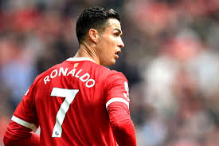
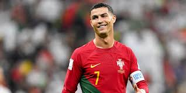
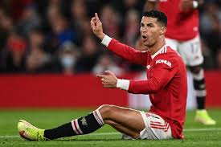
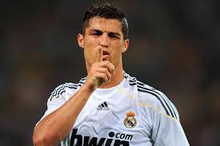
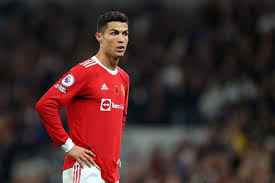

подробно о роналдо





Крииштиа́ну Рона́лду душ Са́нтуш Аве́йру[1] (порт. Cristiano Ronaldo dos Santos Aveiro;
европейский португальский:
5 февраля 1985, Фуншал, Португалия) — португальский футболист,
нападающий и капитан саудовского клуба «Ан-Наср» и сборной Португалии.
Чемпион Европы, пятикратный победитель Лиги чемпионов УЕФА.
Считается одним из лучших футболистов всех времён
Рекордсмен по количеству матчей, сыгранных за национальную сборную,
лучший бомбардир в истории футбола по данным МФФИИС и четвёртый по данным RSSSF[англ.],
самый результативный футболист на уровне сборных[13].
Признан Португальской футбольной федерацией лучшим игроком
в истории португальского футбола[14]. Первый футболист в истории,
которому удалось выиграть английскую Премьер-лигу,
испанскую Примеру и итальянскую Серию A[15].
Признавался лучшим игроком и бомбардиром сезона в каждом из этих турниров.
Начал профессиональную карьеру в португальском клубе «Спортинг»,
в 2003 году перешёл в английский «Манчестер Юнайтед», в 2009 году
— в испанский «Реал Мадрид» (сумма этого трансфера до 2013 года
была рекордной за всю историю футбола), в 2018 году — в итальянский «Ювентус».
Неоднократно становился обладателем «Золотого мяча» France Football
(2008, 2016, 2017), «Золотого мяча» ФИФА (2013, 2014) и «Золотой бутсы»
(2008, 2011, 2014, 2015). Является рекордсменом по количеству проведённых
матчей в еврокубках, лучшим бомбардиром европейских турниров за всё время,
лучшим ассистентом в истории Лиги чемпионов УЕФА[16] и рекордные семь раз
становился лучшим бомбардиром сезона в Лиге чемпионов УЕФА, шесть из которых
— подряд: в 2008, а также в 2013, 2014, 2015[b], 2016, 2017 и 2018 годах.
После третьей подряд победы в Лиге чемпионов в составе «Реал Мадрида» стал
первым игроком, выигравшим этот трофей пять раз[17].
За национальную сборную Португалии провёл 213 матчей, сыграл на 14
турнирах и отличился на 13 из них. С 2008 года является капитаном
сборной, в 2014 году стал её лучшим бомбардиром, а в 2016 году
установил рекорд по количеству сыгранных матчей. В составе сборной
стал чемпионом Европы 2016 и победителем Лиги наций УЕФА 2019. Первый европеец,
который смог забить 100 или больше мячей в составе сборной.
Один из самых узнаваемых спортсменов в мире, признан
самым высокооплачиваемым спортсменом мира по версии журнала
Forbes в 2016 и 2017 годах[18][19], а также самым известным
спортсменом мира по версии ESPN в 2016, 2017, 2018 и 2019 годах.
Time включил Роналду в список ста самых влиятельных людей в мире в 2014 году.
C 2010 по 2019, заработав, по оценкам журнала Forbes, 800 млн долларов,
занял второе место в списке самых высокооплачиваемых спортсменов десятилетия,
уступив лишь Флойду Мейвезеру[20]. В ноябре 2022 года стал первым в истории
человеком, набравшим 500 миллионов подписчиков в Instagram[21].